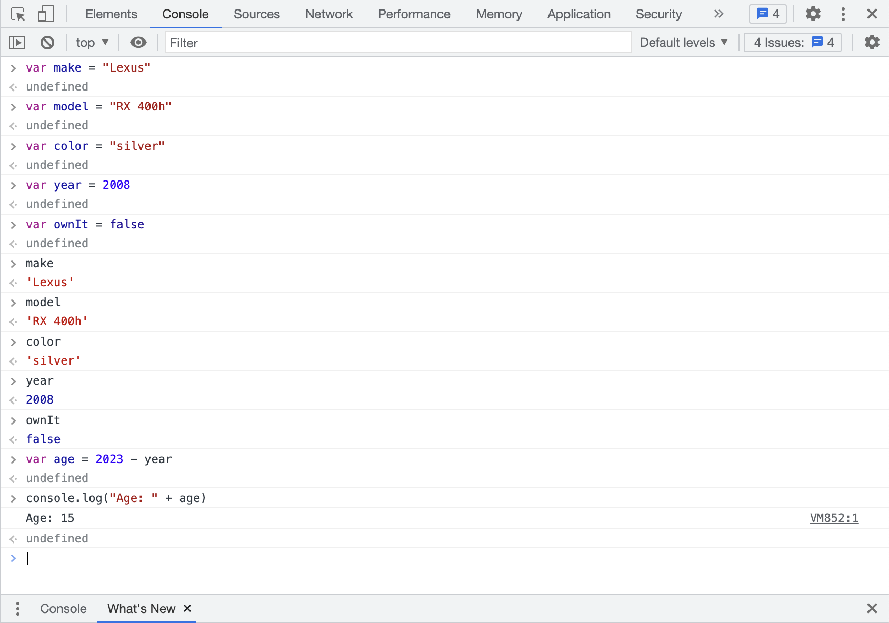
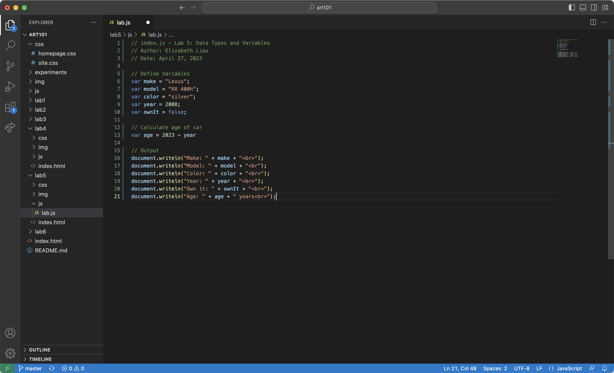
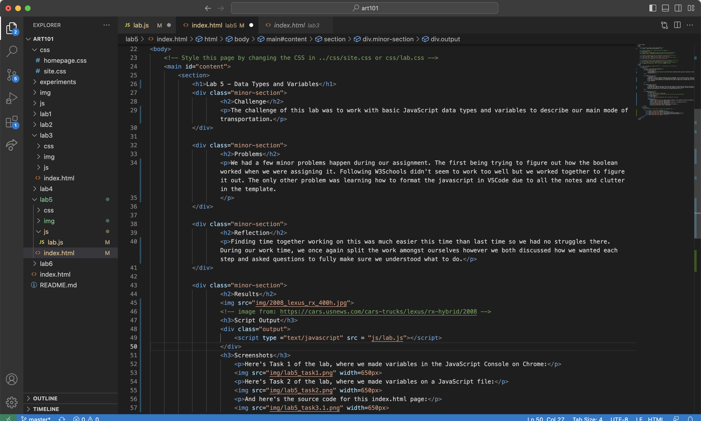

Lab 5 - Data Types and Variables
Challenge
The challenge of this lab was to work with basic JavaScript data types and variables to describe our main mode of transportation.
Problems
We had a few minor problems happen during our assignment. The first being trying to figure out how the boolean worked when we were assigning it. Following W3Schools didn't seem to work too well but we worked together to figure it out. The only other problem was learning how to format the javascript in VSCode due to all the notes and clutter in the template.
Reflection
Finding time together working on this was much easier this time than last time so we had no struggles there. During our work time, we once again split the work amongst ourselves however we both discussed how we wanted each step and asked questions to fully make sure we understood what to do.
Results
Script Output
Screenshots
Here's Task 1 of the lab, where we made variables in the JavaScript Console on Chrome:
Here's Task 2 of the lab, where we made variables on a JavaScript file:
And here's the source code for this index.html page:
